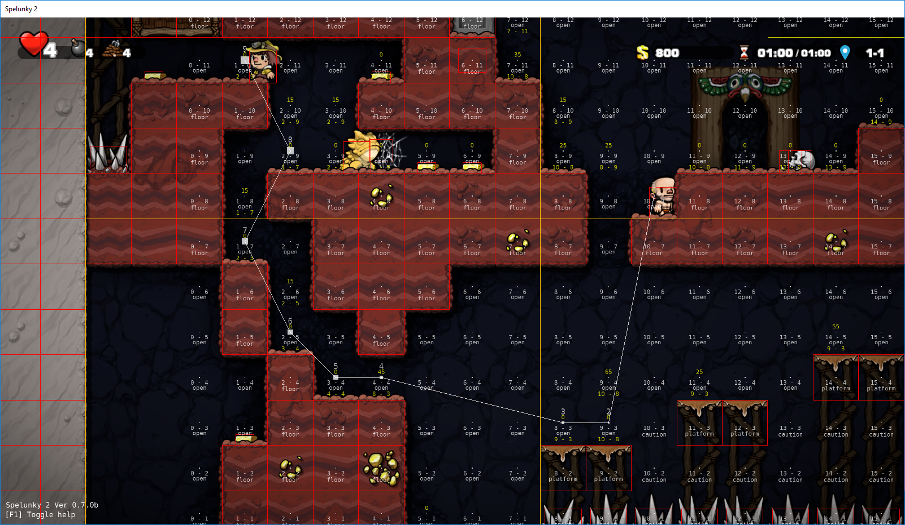
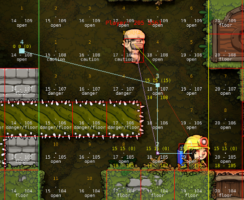
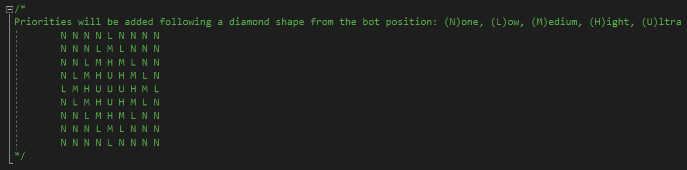
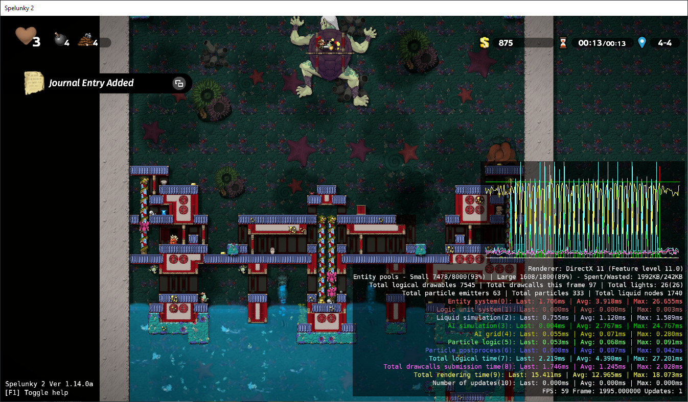
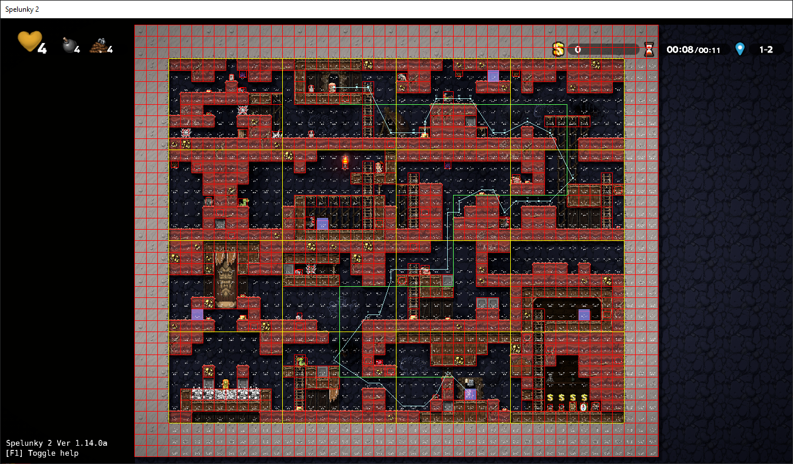
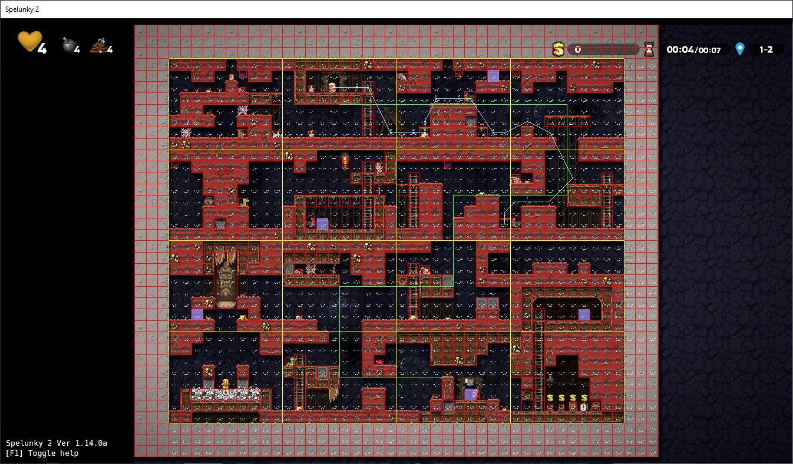
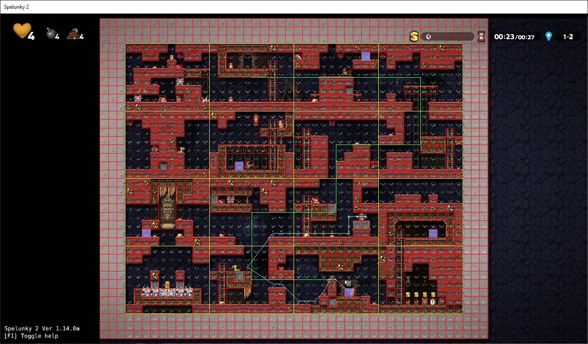

Problemas, desafíos y soluciones en la creación de la Inteligencia Artificial de los Hired Hands

Problemas, desafíos y soluciones en la creación de la Inteligencia Artificial de los Hired Hands
Pequeña introducción al caos

Hace ya cuatro años desde el lanzamiento de Spelunky 2, y qué mejor manera de celebrarlo que con un pequeño post-mortem de uno de los personajes más queridos y/u odiados de todos: el jornalero (en adelante HH por su nombre inglés, Hired Hand), esos pequeños y adorables calvitos que lo mismo te salvan de un malvado troglodita que amenaza tu aventura con una escopeta, que te tiran una piedra en la cabeza y te lanzan de lleno a la lava sólo porque sí.
Me llamo Javier Moya Nájera (más conocido como "eglomer" en la comunidad) y fuí uno de los programadores principales del juego. Entre otras cosas, fui el encargado de implementar la inteligencia artificial (IA) que está detrás de los HHs y, en este documento, voy a hacer un repaso de los problemas y desafíos que enfrenté a la hora de la creación de esta IA, así como las soluciones que le dimos a dichos problemas. Por supuesto, tratar con todos y cada uno de ellos nos llevaría demasiado tiempo, por lo que nos centraremos sólo en aquellos más importantes o con más relevancia.

Intentando matar al HH para probar la detección de peligros.
Al principio de los tiempos, Andy creó los Hired Hands
Andy Hull fue el programador principal de Spelunky HD y fue él quien se encargó de la programación de los HHs originales. Bajo mi punto de vista, los HHs de Spelunky HD eran divertidos y funcionaban muy bien dentro del juego, por lo que en un primer momento hice lo mismo que habíamos hecho con otras entidades del juego como los murciélagos o las arañas: hacer un port directo de la lógica del primer juego al segundo, adaptando los diferentes tecnicismos a las características propias del Spelunky 2. El resultado fue... digamos "interesante".
Los HHs no acababan de funcionar bien con el nuevo sistema de input, por lo que la mayoría del tiempo acababan colgados de algún borde incapaces de moverse. Además, había un montón de nuevos elementos en el juego que el sistema de búsqueda de caminos no entendía, como los líquidos dinámicos, las plataformas o la capa trasera del nivel. Súmale ahora que la física no era exactamente la misma, por lo que las distancias, velocidades, etc. habían cambiado y, por supuesto, nuevos monstruos como los queridísimos topos, u objetos como la mochila energética.
Había cambios, muchísimos, por lo que teníamos dos opciones sobre la mesa: o bien ir adaptando el código del juego anterior al nuevo juego, arrastrando sus posibles problemas y limitaciones, o bien limpiar toda lógica del sistema, dejando sólo las bases del algoritmo de búsqueda de caminos y empezar de cero, añadiendo de nuevo todos los enemigos, objetos, tipos de suelo, etc.
Finalmente nos decidimos por esta segunda opción y empezó una aventura la mar de frustrante y divertida a partes iguales.

¡Lo siento, Hired Hands del Spelunky HD!
La gravedad de la gravedad
Con todo ya preparado, empecé a trabajar en el sistema de búsqueda de caminos donde el HH se mantenía quieto y simplemente iba calculando el camino hacia mi personaje. De este modo, fui añadiendo los diferentes tipos de suelos, escaleras y demás de manera que el HH fuese capaz de calcular correctamente los caminos.
Como el HH se generaba en la entrada del nivel y los niveles normalmente son de orientación descendente (la puerta de salida está en la parte de abajo del nivel), todo iba bastante bien, hasta que me dio por probarlo al revés, y entonces me enfrenté a la dichosa gravedad.
El algoritmo que usamos para la búsqueda de caminos es un algoritmo A* (puedes leer más sobre su funcionamiento aquí). Este algoritmo es relativamente sencillo cuando los juegos 2D son de movimiento plano (arriba y abajo mueve al personaje hacia delante y detrás, como en un Zelda clásico), pero Spelunky es un juego de movimiento horizontal, por lo que tenemos gravedad y, por tanto, necesitamos saltos para llegar a lugares altos. Pero, ¿cómo calculamos los saltos? ¿Hasta dónde puede llegar el personaje? ¿Qué saltos se consideran posibles o imposibles? ¿Y si además tenemos equipado algún potenciador como las botas saltarinas? Porque no olvidemos que en el modo Arena estos potenciadores y objetos como las capas las pueden equipar tanto humanos como bots.
Así pues, dediqué un tiempo a hacer pruebas yo mismo, con mis habilidades de jugador promedio, y fui tomando nota de velocidades, distancias y resultados en saltos de diferentes características y bajo diferentes circunstancias. Todo ello me llevó a sacar una fórmula genérica de lo que se podía y no se podía hacer, y aquello sirvió como base para ir implementando poco a poco los saltos.

Pequeño esquema resultado de mis pruebas iniciales.
Viéndolo en retrospectiva, tal vez no fue del todo la mejor manera de proceder, puesto que todo esto dependía de un factor importante: las físicas. Si por cualquier motivo hubiese habido algún cambio en el sistema de físicas (la velocidad de movimiento o la fuerza del salto) bien podría haber desajustado todo el cálculo de saltos pero, por suerte, no fue el caso.

HH buscando el camino hacia mi posición.
Los primeros pasos, las primeras caídas
¡Y, por fin, llegó el momento de la verdad! Una vez la búsqueda de caminos estuvo lo suficientemente madura, habilité el movimiento en el HH que, como he dicho antes, simplemente se dedicaba a seguirme como un patito sin más objetivo que llegar a mi personaje. Entonces me di de bruces con la otra parte de la gravedad: las caídas.
"Todo lo que sube tiene que bajar", reza la ley de la gravedad de Newton, y es tan válida en la vida real como en el Spelunky 2. El problema es que la IA de los HHs no tenía en cuenta las caídas, por lo que en las primeras pruebas saltar hacia abajo solía significar que el HH se diese de bruces contra el suelo si la caída era lo suficientemente grande, recibiendo el daño correspondiente.
Para solucionar esto, simplemente añadí un sistema de detección de caídas peligrosas, de manera que al superar cierto umbral de velocidad, o bien si justo debajo había un suelo peligroso (como pueden ser unos pinchos o lava), en la búsqueda de caminos se buscaba el nodo seguro más cercano (algún borde o cuerda al que agarrarse, algún suelo intermedio donde resetear la velocidad de caída...) y redirigía al HH hacia él, de manera que se evitaba el daño por caídas.

HH saltando sobre pinchos y calculando el punto seguro de aterrizaje (morado).
Con esto solucionado, el movimiento básico de los HHs estaba completado.

HH siguiendo a mi personaje allá donde va.
Un grid para gobernarlos a todos
Con los HH ya en movimiento, ir trabajando en ellos se volvió más cómodo. Era emocionante ver cómo iban, poco a poco, siendo capaces de saltos difíciles, o de esquivar trampas o vencer enemigos, aunque también empezaron a aflorar ciertas limitaciones y problemas; pero antes de explicar estos problemas debemos entender un poco mejor cómo funcionaba el sistema de búsqueda de caminos que usa el juego.
Nuestro algoritmo, como hemos dicho, usa A*, que básicamente es un grid (o rejilla) donde se analiza cada nodo (o espacio) del grid para determinar qué hay en él y, en base a ello, hacer que la IA reaccione de una forma u otra. Esto se puede apreciar en las capturas anteriores, donde se ve el tipo de cada nodo en la pantalla (open para espacios abiertos, floor para suelos, danger para nodos donde es mejor no estar...). Este grid, por decirlo de algún modo, es como los ojos de la IA, donde ve qué hay y, a partir de ahí, ya decide qué hacer.
El grid de los HHs fue algo que heredamos de Spelunky HD y tenía estas características:
• Cada HH tenía su propio grid y se movía con el HH, de manera que el HH siempre estaba en el centro del grid.
• Era del tamaño de dos habitaciones; esto se debió a las limitaciones técnicas de la versión de Xbox donde grids de mayor tamaño causaban ralentizaciones, de manera que Andy tuvo que reducir su tamaño hasta el mínimo aceptable (dado que los niveles de deathmatch allí eran siempre del tamaño de una habitación y, dado que el HH estaba en el centro del grid y el grid se movía con él, al hacerlo del tamaño de dos habitaciones, si el HH se situaba en el borde del nivel el grid ocuparía lo suficiente como para alcanzar el borde contrario, asegurándose así de que la IA siempre supiese todo lo que pasaba en todo el nivel).

Ejemplo de grid (en amarillo) con el HH en su centro.
Esto suponía varios problemas, el primero de ellos relacionado con su tamaño. Como el tamaño del grid era limitado, la IA era incapaz de "ver" qué había fuera de ese espacio y, por tanto, a veces no encontraba el camino a algo que era fácilmente accesible, o empezaba a hacer idas y venidas sin ton ni son (por ejemplo, detectaba un objeto, calculaba su camino hacia él, este camino implicaba que se tenía que alejar del objeto, esto hacía que el grid se desplazase y el objeto quedase "fuera" de su vista de manera que dejaba de ir a por él, volviendo a la posición inicial, detectándolo de nuevo y entrando en bucle).
Esta limitación también afectaba a algo que a mi parecer era importante, y era ser capaz de seguir al jugador sin perderse. Con el grid de ese tamaño era muy fácil que, si el HH quedaba atontado por haber recibido un golpe mientras el jugador seguía avanzando en el nivel, al despertar, como el jugador estaba ya fuera de su vista, no sabía hacia dónde debía ir; o peor, que detectase al jugador en el piso de arriba o abajo y se volviese loco intentando llegar pero sin encontrar un camino, volviendo a las idas y venidas que comentábamos antes.
Esto se solucionó inicialmente con un sistema de seguimiento del jugador, de manera que cada HH iba guardándose las últimas posiciones del jugador al que seguía en cada habitación. De este modo, iba siguiendo estas últimas posiciones, que siempre quedaban dentro de su vista, hasta que alcanzaba al jugador.

HH siguiendo el rastro del jugador habitación a habitación hasta dar con él.
Pese a que inicialmente funcionaba bastante bien, esta solución tampoco estaba exenta de problemas ya que, a veces, se daban posiciones imposibles de alcanzar si la última posición estaba, por ejemplo, en medio del aire y el HH había caído al piso de abajo, haciendo que el HH se quedase bloqueado intentando alcanzar dicho nodo. Todo ello hizo que, al final, esta solución se terminase descartando.
Por último, pero no menos importante, el que cada HH tuviese su propio grid hacía que, en caso de tener varios HHs, se estuviesen procesando nodos de forma repetida si los HHs compartían el mismo espacio. Este procesamiento podría ser relativamente costoso, sobre todo si implicaba la detección de líquidos, lo cual podía hacer en según qué condiciones que el rendimiento del juego se viese afectado.

Ejemplo de procesamiento dinámico de nodos con líquidos.
Teniendo en cuenta todos estos problemas, diseñé un grid compartido que utilizasen todos los HHs y que ocupaba la totalidad del nivel, separando el proceso actual de la búsqueda de caminos en dos partes: por una parte la búsqueda de caminos en sí y, por otra, el procesamiento de los nodos del nivel. Esto supuso que:
• Los HHs dejaban de procesar los nodos por sí mismos, pasando a hacerse cargo sólo de calcular el camino, obteniendo los datos del grid compartido.
• El grid compartido se encargaba de gestionar la actualización de los nodos, eliminando la duplicidad de cálculos.
Gracias a este nuevo grid, conseguimos solucionar todos los problemas detectados en el uso del grid individual, aunque como veremos a continuación, también trajo consigo algunas molestias.

Grid compartido ocupando todo el nivel.
Divide y vencerás
Acabábamos de cambiar unos pocos pequeños grids por un grid compartido de tamaño mayúsculo que se encargaba de comprobar todos los nodos del nivel cada pocos frames. Como era de esperar, esto hizo que el rendimiento del juego se viese afectado, por lo que hubo que buscar la manera de hacerlo funcionar de una forma eficiente. De otro modo, todo el esfuerzo hubiese sido en vano.
La solución consistió en dividir el grid compartido en varios grupos. Aprovechando que ya teníamos el concepto de "habitación" en el juego, usé eso como divisor, de manera que ahora el grid compartido en vez de actualizar el nivel entero iba actualizando habitaciones y, por supuesto, no todas a la vez. Le añadí un sistema de prioridades en forma de diamante, de manera que si un HH estaba en una habitación X, esa habitación y las colindantes arriba, abajo, izquierda y derecha obtenían la máxima prioridad, y el resto de habitaciones obtenían su prioridad respecto a cuán lejos se encontraban del HH. Esto sumado a una limitación de cuántas habitaciones se podían actualizar en cada frame nos dio la solución perfecta para mantener el grid compartido sin que el rendimiento se viese seriamente afectado.

Esquema del funcionamiento del sistema de prioridades.

Sistema de prioridades en acción.
Aún así, todavía quedaba algo que podía llegar a ser preocupante y era la propia búsqueda de caminos de los HHs. Si bien la creación del grid compartido había mejorado los tiempos de estas búsquedas, lo cierto era que al reunir a muchos HHs, los tiempos se disparaban. Después de investigarlo vi que el problema radicaba en que, pese a que los HHs limitaban la actualización de su camino a una vez cada pocos frames, todos coincidían en el mismo frame, de manera que teníamos N frames en los que ningún HH actualizaba su camino, y en el frame N+1 de repente todos se ponían a hacer sus cálculos creando un tirón en el juego.
De nuevo, bastó con dividir la carga de trabajo en varios frames de una forma similar a como se había hecho en Spelunky HD. Así, se estableció un límite de cuántos HHs podían calcular su camino en el mismo frame. Este límite era dinámico y se basaba en cuántos HHs había en el nivel, de manera que si había pocos HHs, cada uno hacía sus cálculos en un frame distinto, pero si había muchos, se incrementaba el límite dinámicamente para que ninguno se quedase sin calcular su camino.

—¡Me toca calcular a mí!
—¡No, me toca a mí!
En busca del equilibrio perfecto
Había solucionado ya los principales problemas de rendimiento y búsqueda de caminos. Todo iba bien, era un día soleado, el cielo estaba despejado, y yo andaba feliz de la vida cuando nos llegó un reporte de un usuario diciendo que en el nivel de Kingu se ralentizaba cuando tenía algún HH si el jugador estaba en la espalda del monstruo.
Sorprendido, me puse manos a la obra para descubrir qué era lo que fallaba en mi "maravilloso" y por lo visto no tan perfecto sistema. Después de conseguir reproducir el problema y analizar un poco los números, entendí qué era lo que pasaba.
Resulta que, en su intento por encontrar un camino hasta el jugador, la IA estaba procesando prácticamente el grid al completo (que, recordemos, ocupaba el nivel entero) y eso estaba causando unos parones la mar de pronunciados:

IA ("AI simulation" en verde) causando parones al intentar calcular un camino hasta el jugador.
Los HHs tienen un tratamiento especial en este tipo de niveles para intentar no interferir con los combates contra los jefazos por lo que este caso en especial no era especialmente preocupante (bastaba con activar ese modo de no molestar en este nivel), pero esto dejó patente un problema que se podía dar si el HH no conseguía calcular ningún camino hasta el jugador, donde procesaría cientos de nodos en su búsqueda exhaustiva de un camino válido.
Para solucionarlo, lo que hice fue limitar la cantidad de nodos que se podían procesar en un solo frame. Superado ese límite, la IA simplemente cogería el nodo más cercano posible al jugador e iría hacia él, con la esperanza de que en el próximo cálculo encontrase un camino válido. Así, a base de poco a poco acercarse hasta el objetivo final, mejoraba el tiempo empleado de la IA en conseguir su objetivo.
Esto, pese a que en principio funcionaba, llevó a un tira y afloja de pruebas y testeo hasta encontrar un equilibrio entre la cantidad de nodos procesados por frame y la posibilidad de que el HH se perdiese. Así, finalmente di con un número en el que permitía a la IA llegar hasta su destino en la mayoría de los casos.
En caso de pérdida, la IA por aquel entonces ya contaba con un modo de deambuleo donde se dedicaba a andar de un lado a otro del nivel intentando encontrar a su jugador, por lo que para este escenario no hubo que hacer nada extra.
Viéndolo en imágenes, pasamos de esto, donde el camino al completo se calculaba de un tirón:

A esto, donde en las primeras iteraciones se superaba el límite máximo, por lo que pasaba a ir a la posición más cercana (el final de la línea azul) hasta acercarse lo suficiente como para encontrar un camino directo:



Gracias a esto, el comportamiento de los HHs apenas varió con respecto a su comportamiento anterior, pero el rendimiento en casos extremos mejoró notablemente:

Medición de la IA ("AI simulation" en verde) calculando un camino hasta el jugador tras los cambios.
¡Benditas herramientas de depuración!
A la hora de enfrentar todos estos problemas y desafíos en el juego contábamos con una variedad bastante grande de herramientas que nos ayudaban a detectar y arreglar todo tipo de situaciones. Por ejemplo, con pulsar un botón podíamos pausar la ejecución para ver el estado del juego en ese frame en concreto, pulsar otro botón para ir avanzando frame a frame, o bien acelerar el juego para llegar rápido a cualquier sitio. Es por eso que no es de extrañar que, cada cierto tiempo, algún miembro del equipo soltase un "¡Bendita [inserte aquí el nombre de la herramienta que prefiera]!".
Entre todas las herramientas que desarrollamos, para el desarrollo de la IA tres de ellas fueron cruciales: el sistema de replays, el sistema de autotesting y la debug layer (capa de debug).
El sistema de replays iba guardando en cada nivel todos los inputs que sucedían en el juego conforme ibas jugando, tanto de jugadores como de no jugadores, de manera que si luego reproducías ese replay, podías reproducir exactamente todo lo que había pasado en ese nivel. Así, si nuestros estupendos compañeros de Lollipop Robot (nuestro equipo de QA) veían durante sus sesiones de testeo algún comportamiento extraño, nos mandaban el replay y podíamos ver exactamente qué había pasado y, lo que es mejor, reproducir el error tantas veces como fuese necesario hasta conseguir averiguar qué era lo que lo causaba y probar que realmente estuviese solucionado una vez arreglado.

Opciones de replay en nuestra capa de herramientas de desarrollo.
El autotesting, por su parte, nació en un principio para detectar errores en la generación de niveles. Lo que hacía era generar un nivel aleatorio, hacer una serie de comprobaciones, y pasar a otro nivel, y así hasta dar con algún error, y todo esto a velocidad de vértigo. En un determinado momento Micky, nuestro lead programmer, sugirió la idea de engancharle la IA al personaje principal y hacer que simplemente intentase llegar a la puerta de salida. Un par de horas después de sugerirlo ya estaba nuestro autotesting en marcha, aunque al principio la IA no sabía cómo luchar contra monstruos o hacer saltos muy complejos, por lo que solía morir rápido. Conforme avanzó el desarrollo de la IA, este autotesting se convirtió cada vez más en una herramienta imprescindible, hasta el punto de que muchas veces me dedicaba a mirar a la IA intentar superar un nivel para detectar errores en el sistema de combate, o de búsqueda de caminos (poniéndolo a velocidad normal, por supuesto; con el turbo puesto no había forma de ver nada). Además, ahora que el autotesting no sólo cargaba un nivel tras otro sino que había "alguien" jugándolo, conseguimos descubrir y parchear errores y situaciones que, de otra forma, hubiesen sido casi imposibles de reproducir (por ejemplo, crashes en los que debía darse una situación concreta en un frame concreto para ocurrir).

Autotesting a toda velocidad.
Por último, la debug layer me permitía añadir cualquier tipo de información que necesitase ver en pantalla: el grid de la IA, el camino que había encontrado, el estado de cada HH... Podéis verlo en prácticamente todas las capturas de este documento.

Opciones de la IA dentro de la Debug Layer.
Teníamos muchas más herramientas disponibles pero, de todas ellas, sin éstas tres el desarrollo de los HHs hubiese sido mucho más costoso y tedioso.
¡Benditas sean!
Nada más que añadir, señoría
¡Y hemos llegado al final!
Estas han sido algunas de las aventuras y desventuras que he vivido trabajando en la IA. A veces lloraba de frustración, a veces daba saltos de alegría pero, sobre todo, me lo pasé muy, muy bien y guardo un gran recuerdo de ello.

HH burlando a la muerte.
Y, pese a que pueda ser una opinión impopular, creo que los HHs son unos grandes compañeros de juego. Sí, no son perfectos (nadie lo es), y me han arruinado más de una partida, pero creo que es precisamente en esa imperfección donde radica su encanto, en ese equilibrio entre buen compañero y mal compañero: lo mismo se deshace de todo enemigo como un verdadero ninja...
 ...que te tira algo en la cabeza (siempre por intentar ayudar, eso sí) y acabas criando malvas.
...que te tira algo en la cabeza (siempre por intentar ayudar, eso sí) y acabas criando malvas.
 Vamos, que es casi como jugar con otra persona. O quizá sea cosa mía. Quizá después de tanto tiempo juntos les haya cogido cariño incluso con sus flaquezas. No sé... será amor de padre.
Vamos, que es casi como jugar con otra persona. O quizá sea cosa mía. Quizá después de tanto tiempo juntos les haya cogido cariño incluso con sus flaquezas. No sé... será amor de padre.

—¡Gracias por leer!
15 de Septiembre de 2024.